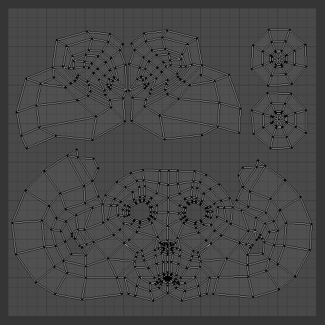
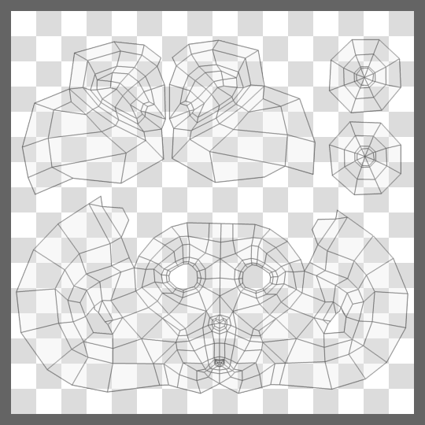
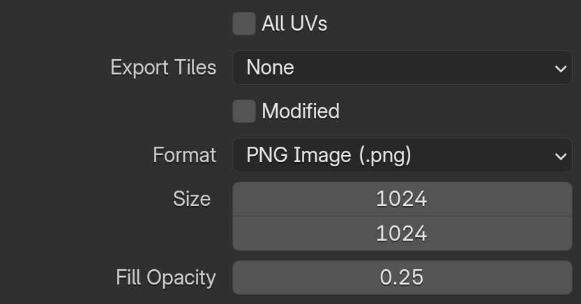

Chỉnh sửa UV¶
Sau khi unwrap, nhiều khả năng bạn sẽ cần sắp xếp lại các UV map để chúng có thể được dùng cho việc texture hoặc paint. Mục tiêu của việc chỉnh sửa là:
Ghép (đóng) lại các mảnh (của UV map) với nhau.
Giảm thiểu khoảng trống bị lãng phí trong hình ảnh.
Phóng to các face ở nơi bạn muốn có nhiều chi tiết hơn.
Thay đổi kích thước/phóng to các face bị kéo giãn.
Thu nhỏ các face quá nhiễu và có quá nhiều chi tiết.
Với khoảng trống chết ở mức tối thiểu, nhiều pixel nhất có thể được dành để mang lại độ chi tiết và độ tinh tế tối đa cho UV texture. Một UV face có thể nhỏ bằng một pixel (những chấm nhỏ hợp nên hình ảnh) hoặc lớn bằng cả hình ảnh. Bạn có lẽ nên thực hiện các điều chỉnh lớn trước, sau đó tinh chỉnh bố cục.
Transform¶
Tham khảo
- Editor:
UV Editor
- Mode:
Edit Mode
- Tool:
- Menu:
Move G
Xoay R
Scale S
Shear Shift-Ctrl-Alt-S
Khóa trục
Các phép biến đổi có thể bị khóa vào một trục bằng cách nhấn X hoặc Y sau khi dùng một trong các công cụ biến đổi. Ngoài ra, giữ MMB sẽ giới hạn di chuyển theo trục X hoặc Y.
Vertex Slide¶
Tham khảo
- Mode:
Edit Mode
- Menu:
Vertex Slide sẽ biến đổi một vertex dọc theo một trong các edge kề với nó. Dùng Shift-V để kích hoạt công cụ. Vertex được chọn gần con trỏ chuột nhất sẽ là vertex điều khiển. Di chuyển chuột theo hướng của edge mong muốn để xác định vị trí vertex. Sau đó nhấn LMB để xác nhận phép biến đổi.
- Factor
Xác định mức độ trượt được thực hiện. Giá trị âm tương ứng với trượt về phía một vertex, trong khi giá trị dương tương ứng với vertex còn lại.
- Even E
Theo mặc định, giá trị dịch chuyển của các vertex là phần trăm chiều dài của các edge mà chúng di chuyển dọc theo. Khi chế độ Even được bật, các vertex được dịch chuyển theo một giá trị tuyệt đối.
- Flipped F
Khi Flipped được bật, các vertex di chuyển cùng một khoảng cách từ các vertex kề nhau, thay vì di chuyển từ vị trí ban đầu của chúng.
- Clamp Alt or C
Bật/tắt giới hạn phép trượt trong phạm vi của edge.
Edge Slide¶
Tham khảo
- Mode:
Edit Mode
- Menu:
Trượt một hoặc nhiều edge qua các face kề nhau với một vài ràng buộc liên quan đến việc chọn edge (tức là phần chọn buộc phải tạo thành một vòng hợp lệ, xem dưới đây).
- Factor
Xác định mức độ trượt được thực hiện. Giá trị âm tương ứng với trượt về phía một face, trong khi giá trị dương tương ứng với face còn lại.
- Even E
Buộc vòng edge khớp với hình dạng của vòng edge kề nhau. Bạn có thể lật sang vertex đối diện bằng F.
- Flipped F
Khi chế độ Even được bật, tùy chọn này lật qua lại giữa hai vòng edge kề nhau mà vòng edge đang hoạt động sẽ khớp theo.
- Clamp Alt or C
Bật/tắt giới hạn phép trượt trong phạm vi của edge.
- Mirror Editing
Cho phép bạn áp dụng thao tác này lên các phần tử đối xứng của mesh (nếu có, theo hướng X cục bộ).
Randomize¶
Tham khảo
- Editor:
UV Editor
- Mode:
Edit Mode
- Menu:
Ngẫu nhiên hóa scale, rotation và offset của các UV island được chọn. Công cụ Randomize Transform trong UV editor hoạt động tương tự công cụ Randomize Transform trong 3D view.
- Random Seed
Thay đổi seed ngẫu nhiên được dùng bởi bộ sinh số ngẫu nhiên giả, tạo ra kết quả biến đổi khác nhau cho mỗi giá trị seed.
- Location
Mức ngẫu nhiên hóa vị trí.
- Rotation
Mức ngẫu nhiên hóa góc xoay.
- Scale Even
Áp dụng cùng một scale cho tọa độ U và tọa độ V.
- Scale
Mức ngẫu nhiên hóa scale theo tọa độ U và V.
Mirror¶
Tham khảo
- Editor:
UV Editor
- Mode:
Edit Mode
- Menu:
- Shortcut:
Ctrl-M
UV có thể được mirror theo trục Y hoặc trục X:
Mirror X
Mirror Y
Bạn cũng có thể dùng phím tắt X hoặc Y, hoặc giữ MMB và kéo theo hướng mirror.
Copy Mirrored UV Coordinates¶
Tham khảo
- Editor:
UV Editor
- Mode:
Edit Mode
- Menu:
Sao chép tọa độ UV từ một phía của mesh đối xứng sang phía được mirror.
Operator này tìm các vertex đối xứng qua trục mesh đã chọn và sao chép tọa độ UV của chúng sang các vertex được chọn tương ứng. Điều này hữu ích khi làm việc với các model đối xứng mà UV chỉ cần chỉnh sửa ở một phía.
Chỉ những vertex được chọn mới bị ảnh hưởng.
- Mesh Axis
Xác định trục được dùng để tìm các vertex đối xứng trong mesh.
- -X to +X:
Sao chép UV từ phía X âm sang phía X dương.
- -Y to +Y:
Sao chép UV từ phía Y âm sang phía Y dương.
- -Z to +Z:
Sao chép UV từ phía Z âm sang phía Z dương.
- +X to -X:
Sao chép UV từ phía X dương sang phía X âm.
- +Y to -Y:
Sao chép UV từ phía Y dương sang phía Y âm.
- +Z to -Z:
Sao chép UV từ phía Z dương sang phía Z âm.
- UV Axis
Xác định trục UV được dùng khi mirror tọa độ UV.
- X:
Mirror tọa độ UV qua trục UV ngang.
- Y:
Mirror tọa độ UV qua trục UV dọc.
- Precision
Dung sai được dùng khi tìm các cặp vertex đối xứng.
Giá trị cao hơn cho phép khớp các vertex bị lệch nhẹ khỏi trạng thái đối xứng hoàn hảo.
Snap¶
Tham khảo
- Editor:
UV Editor
- Mode:
Edit Mode
- Menu:
- Shortcut:
Shift-S
Snapping trong UV Editor tương tự như Snapping trong 3D. Để các tùy chọn snap vào pixel hoạt động, phải có một hình ảnh được tải.
- Selected to Pixels
Di chuyển phần chọn đến pixel gần nhất. Xem thêm Round to Pixels bên dưới.
- Selected to Cursor
Di chuyển phần chọn đến vị trí con trỏ 2D.
- Selected to Cursor (Offset)
Di chuyển tâm phần chọn đến vị trí con trỏ 2D, đồng thời giữ nguyên khoảng dịch chuyển của các vertex so với tâm.
- Selected to Adjacent Unselected
Di chuyển phần chọn đến phần tử kề chưa được chọn.
- Cursor to Pixels
Snap con trỏ đến các pixel gần nhất.
- Cursor to Selected
Di chuyển con trỏ đến tâm của phần chọn.
- Cursor to Origin
Đặt con trỏ đến vị trí (0, 0, 0).
Merge¶
Tham khảo
- Editor:
UV Editor
- Mode:
Edit Mode
- Menu:
- Shortcut:
M
- At Center
Di chuyển các UV được chọn đến vị trí trung bình của chúng.
- At Cursor
Di chuyển các UV của phần chọn đến vị trí con trỏ 2D.
By Distance¶
Tham khảo
- Editor:
UV Editor
- Mode:
Edit Mode
- Menu:
Gộp các UV được chọn nằm trong khoảng Merge Distance đã chỉ định.
- Merge Distance
Khoảng cách lớn nhất giữa các vertex được gộp.
- Unselected
Gộp phần chọn vào các vertex khác chưa được chọn.
- Shared Vertex
Gộp các UV tương ứng với cùng một vertex của mesh, ngay cả khi chúng có tọa độ UV khác nhau.
Split¶
Tham khảo
- Editor:
UV Editor
- Mode:
Edit Mode
- Menu:
- Shortcut:
Alt-M
- Selection Y
Tách (ngắt kết nối) phần chọn khỏi phần còn lại của UV. Các edge viền tiếp giáp với bất kỳ phần tử nào không được chọn sẽ bị nhân đôi.
Lưu ý rằng "bản sao" được để nguyên ngay tại vị trí của bản gốc, vì vậy bạn phải di chuyển nó để nhìn thấy rõ.
Rip Move UVs¶
Tham khảo
- Editor:
UV Editor
- Mode:
Edit Mode
- Menu:
- Shortcut:
V
Operator Rip Move UVs tách các phần tử UV được chọn (vertex, edge hoặc face) khỏi các thành phần được kết nối, tạo ra một vết "xé" trong UV map. Sau khi tách, phần chọn chuyển sang chế độ di chuyển, cho phép kiểm soát chính xác vị trí và cách các phần tử UV bị kéo ra.
Điều này hữu ích để tách riêng các UV island hoặc unwrap các phần tử chồng lấn mà không ảnh hưởng đến geometry xung quanh.
Ghi chú
Operator Rip Move UV không tương thích với Sync Selection. Để dùng công cụ này, hãy đảm bảo Sync Selection đã tắt trong UV Editor.
Xem thêm
Rip Region Tool -- Phiên bản modal của rip operator.
Chỉnh sửa mesh Rip -- Chức năng tương tự cho việc chỉnh sửa mesh trong 3D Viewport.
Unwrap¶
Tham khảo
- Editor:
UV Editor
- Mode:
Edit Mode
- Menu:
- Shortcut:
U
Blender cung cấp một số cách ánh xạ UV. Các phương pháp chiếu đơn giản hơn dùng các công thức ánh xạ không gian 3D lên không gian 2D, bằng cách nội suy vị trí của các điểm về phía một điểm, trục hoặc mặt phẳng qua một bề mặt. Các phương pháp nâng cao hơn có thể được dùng với các model phức tạp hơn, và có những mục đích sử dụng cụ thể hơn.
Pin & Unpin¶
Tham khảo
- Editor:
UV Editor
- Mode:
Edit Mode
- Menu:
- Shortcut:
P, Alt-P
Bạn có thể pin các UV để chúng không di chuyển giữa nhiều thao tác unwrap. Khi unwrap một model, đôi khi việc "khóa" một số UV là hữu ích, để các phần của bố cục UV giữ nguyên hình dạng và/hoặc vị trí. Việc pin được thực hiện bằng cách chọn một UV, sau đó chọn Pin từ menu UVs, hoặc dùng phím tắt P. Bạn có thể Unpin một UV bằng phím tắt Alt-P.
Việc pin hiệu quả nhất khi dùng phương pháp Unwrap để ánh xạ UV, cho các object hữu cơ. Một ví dụ là khi bạn đang mô hình hóa một object đối xứng bằng Mirror Modifier. Một số UV nằm trên trục mirror có thể được dùng chung giữa các phần đối xứng. Bạn có thể pin các UV tương ứng với đường trung tuyến, sau đó căn chỉnh chúng theo trục X, và chúng sẽ giữ nguyên vị trí đó.
Các công cụ sculpt Pinch và Relax sẽ không di chuyển bất kỳ UV nào đã pin. Điều này cho phép bạn pin các viền, hoặc vùng quanh các lỗ bên trong, và mang lại khả năng kiểm soát nhiều hơn nữa cho các công cụ sculpt.
Việc pin cũng phối hợp rất tốt với công cụ Live Unwrap. Nếu bạn pin hai UV trở lên, với Live Unwrap được bật, việc di chuyển hoặc scale các UV đã pin sẽ unwrap model một cách tương tác. Bạn thậm chí có thể dùng công cụ sculpt Grab để di chuyển các UV đã pin. Điều này giúp đưa một UV island vào khớp với một hình dạng hay vùng nhất định.
Invert Pins¶
Tham khảo
- Editor:
UV Editor
- Mode:
Edit Mode
- Menu:
Pin tất cả UV được chọn chưa pin và unpin tất cả UV đã pin đang được chọn.
Mark/Clear Seams¶
Tham khảo
- Editor:
UV Editor
- Mode:
Edit Mode
- Menu:
Xem Seam.
Seams from Islands¶
Tham khảo
- Mode:
Chế độ xem
- Menu:
Thêm seam tại ranh giới của các UV island sẵn có. Điều này hữu ích khi chỉnh sửa UV của các mesh đã được unwrap.
Pack Islands¶
Tham khảo
- Editor:
UV Editor
- Mode:
Edit Mode
- Menu:
Công cụ Pack Islands có thể được dùng để tối ưu bố cục UV bằng cách điều chỉnh các island sẵn có sao cho lấp đầy Texture Space một cách hiệu quả. Dựa trên các tùy chọn được chọn, công cụ sẽ scale, dịch chuyển và xoay các island, đảm bảo giữa chúng có một khoảng đệm (margin) xác định để tối đa hóa việc sử dụng không gian UV. Các island đã pin có thể được áp thêm ràng buộc để tùy biến quá trình pack sâu hơn nữa.
- Shape Method
Phương pháp được dùng khi xét đến hình dạng của từng island.
- Exact Shape (Concave):
Dùng toàn bộ hình dạng của island, bao gồm cả việc lấp đầy mọi lỗ hoặc vùng lõm quanh island.
- Boundary Shape (Convex):
Tính đến biên (Convex Hull) của island. Phương pháp này sẽ không đặt island vào bên trong các lỗ.
- Bounding Box:
Dùng bounding box đơn giản của island.
- Scale
Scale các island để lấp đầy hình vuông đơn vị, hoặc pack các island dồn về góc dưới bên trái.
- Rotate
Cho phép xoay các island, bên cạnh dịch chuyển và scale, để tối ưu việc sử dụng texture.
- Rotation Method
Các góc xoay được phép dùng cho từng island.
- Any:
Mọi góc xoay giúp cải thiện việc packing đều được phép.
- Axis-aligned:
Island sẽ được xoay vào một hình chữ nhật nhỏ nhất trước. Việc xoay thêm chỉ theo các bước 90 độ.
- Cardinal:
Giống như bốn hướng chính trên la bàn, Bắc, Nam, Đông và Tây, chỉ các bước xoay 90 độ mới được phép.
- Margin Method
Phương pháp được dùng khi tính khoảng trống giữa các island.
- Scaled:
Dùng scale của các UV hiện có để nhân khoảng đệm.
- Add:
Phương pháp đơn giản, chỉ cộng thêm khoảng đệm.
- Fraction:
Chỉ định chính xác phần nhỏ của hình vuông đơn vị UV làm khoảng đệm. (Chậm hơn hai phương pháp còn lại.)
- Margin
Tỷ lệ cho khoảng trống giữa các island.
- Lock Pinned Islands
Một island mà bất kỳ UV nào của nó bị pin được xem là Pinned Island. Với tùy chọn này, các Pinned Island sẽ không thể di chuyển. Các island khác sẽ pack xung quanh chúng.
- Lock Method
Thay đổi cách các Pinned Island được pack
- Scale:
Scale của các Pinned Island sẽ không thay đổi.
- Rotation:
Các Pinned Island sẽ không xoay.
- Rotation and Scale:
Các Pinned Island có thể dịch chuyển, nhưng không thể scale hay xoay.
- Merge Overlapping
Trước thao tác packing chính, các island chồng lấn lên nhau sẽ được phát hiện và kết hợp tạm thời. Trong khi pack, góc xoay và vị trí tương đối của các island đã gộp được giữ nguyên.
- Pack To
Xác định vị trí cuối cùng của các UV island sau khi hoàn tất thao tác packing.
- Closest UDIM:
Pack các island vào lưới UDIM gần tâm của phần chọn nhất.
- Active UDIM:
Pack các island vào tile hình ảnh UDIM đang hoạt động, hoặc nếu không có hình ảnh, vào tile lưới UDIM nơi con trỏ 2D đang nằm.
- Original bounding box:
Tìm bounding box gốc của phần chọn, pack các island, rồi di chuyển chúng trở lại bên trong hộp gốc.
- Custom Region:
Pack các island vào một vùng tùy chỉnh do người dùng định nghĩa, được thiết lập bằng Set User Region. Điều này cho phép pack island vào các vùng UV tùy ý, chẳng hạn vùng atlas được dành riêng, các vùng trim sheet, hoặc các slot texture theo bố cục cụ thể. Yêu cầu Custom Region phải được bật.
Ghi chú
Hiệu năng của operator Pack Islands bị ảnh hưởng rất nhiều bởi các tùy chọn được chọn, và đôi khi các tùy chọn có thể kết hợp theo những cách khác nhau tạo ra kết quả chậm một cách bất ngờ.
Kết quả nhanh nhất có thể thu được bằng cách dùng phương pháp hình dạng "Bounding Box" và phương pháp khoảng đệm "Add".
Mặc dù bật tùy chọn "Rotate" ảnh hưởng chút ít đến hiệu năng, nó thường làm tăng hiệu quả tổng thể, nên đây là một lựa chọn tốt để luôn giữ bật.
Tuy nhiên, phương pháp khoảng đệm "Fraction" đòi hỏi tính toán nhiều hơn đáng kể để tìm tỷ lệ chính xác. Với một số bố cục, nó thậm chí có thể mất gấp 10 lần thời gian hoàn thành so với các phương pháp đơn giản hơn là "Add" hoặc "Scaled".
Tương tự, các phương pháp "Exact shape" và "Boundary shape" chậm hơn nhiều so với phương pháp "Bounding Box" đơn giản.
Average Island Scale¶
Tham khảo
- Editor:
UV Editor
- Mode:
Edit Mode
- Menu:
Việc dùng công cụ Average Island Scale sẽ scale từng UV island để tất cả chúng xấp xỉ cùng một tỷ lệ.
- Non-Uniform
Giảm độ giãn texture trung bình bên trong các island bằng cách scale trục U và V một cách độc lập.
- Shear
Giảm độ trượt (shear) texture trung bình bên trong các island bằng cách shear trục U.
Arrange/Align Islands¶
Tham khảo
- Editor:
UV Editor
- Mode:
Edit Mode
- Menu:
Sắp xếp các UV island được chọn dọc theo một đường thẳng trên lưới UV. Operator này có thể căn chỉnh các island theo chiều ngang hoặc dọc, với vị trí bắt đầu, tham chiếu căn chỉnh, thứ tự sắp xếp và khoảng cách có thể tùy chỉnh.
Điều này hữu ích cho việc tổ chức bố cục UV, căn chỉnh các mảnh texture theo module, hoặc sắp xếp các tile UDIM một cách nhất quán.
- Initial Position
Xác định điểm tham chiếu được dùng để tính toán phép căn chỉnh ban đầu.
- Bounding Box:
Dùng các bounding box của các island được chọn.
- UV Grid:
Căn chỉnh các island tương đối với gốc lưới UV (tile UV 0-1).
- Active UDIM:
Căn chỉnh các island dựa trên tile UDIM đang hoạt động.
- 2D Cursor:
Dùng vị trí hiện tại của con trỏ 2D làm gốc.
- Axis
Trục mà theo đó các UV island được sắp xếp.
- X:
Căn chỉnh các UV island theo chiều ngang.
- Y:
Căn chỉnh các UV island theo chiều dọc.
- Align
Xác định cách các island được căn chỉnh tương đối với nhau.
- Min:
Căn chỉnh các island theo biên nhỏ nhất của chúng.
- Max:
Căn chỉnh các island theo biên lớn nhất của chúng.
- Center:
Căn chỉnh các island theo tâm của island lớn nhất.
- None:
Giữ nguyên độ dịch chuyển và phép căn chỉnh ban đầu của từng island.
- Order
Chỉ định cách sắp xếp thứ tự các island dọc theo trục đã chọn.
- Largest to Smallest:
Sắp xếp các island theo diện tích, từ lớn nhất đến nhỏ nhất.
- Smallest to Largest:
Sắp xếp các island theo diện tích, từ nhỏ nhất đến lớn nhất.
- Fixed:
Giữ nguyên thứ tự chọn hiện tại.
- Margin
Xác định khoảng cách giữa các island được sắp xếp, tính theo đơn vị UV.
Set User Region¶
Tham khảo
- Editor:
UV Editor
- Mode:
Edit Mode
- Menu:
- Shortcut:
Ctrl-B
Xác định một vùng hình chữ nhật trong UV Editor để dùng làm Custom Region.
Sau khi được xác định, vùng này có thể được chọn làm đích Pack To trong operator Pack Islands bằng cách chọn Custom Region và bật Custom Region.
Custom Region¶
Tham khảo
- Editor:
UV Editor
- Mode:
Edit Mode
- Menu:
- Shortcut:
Ctrl-Alt-B
Bật hoặc tắt việc dùng Custom Region cho các thao tác UV như Pack Islands.
Khi bật, vùng người dùng được xác định trước đó (tạo bằng Set User Region) sẽ hoạt động và hiển thị trong UV Editor. Vùng này xác định ranh giới nơi các UV island được pack hoặc thao tác.
Tắt tùy chọn này sẽ khôi phục hành vi mặc định, khi đó các thao tác UV áp dụng lên hình vuông đơn vị chuẩn hoặc tile UDIM đang hoạt động.
Minimize Stretch¶
Tham khảo
- Editor:
UV Editor
- Mode:
Edit Mode
- Menu:
Công cụ Minimize Stretch làm giảm độ giãn của UV bằng cách tối thiểu hóa khác biệt giữa các góc trong 3D và các góc trong không gian UV. Thao tác này tương tự công cụ Relax với Method là Geometry, nhưng dùng một thuật toán khác.
- Fill Holes
Chỉ trong lúc minimize stretch, các lỗ bên trong sẽ được lấp bằng các polygon tạm để ngăn độ giãn và chồng lấn của các UV xung quanh.
- Blend
Tỷ lệ từ 0 đến 1 của UV gốc được pha trộn vào sau khi độ giãn được tối thiểu hóa. Độ pha trộn 0 là độ giãn được tối thiểu hóa hoàn toàn. Độ pha trộn 0.5 là điểm giữa giữa UV gốc và UV sau minimize stretch.
- Iterations
Số vòng lặp nhiều hơn cho UV mượt hơn, nhưng mất nhiều thời gian xử lý hơn.
Stitch¶
Tham khảo
- Editor:
UV Editor
- Mode:
Edit Mode
- Menu:
- Shortcut:
Alt-V
Công cụ Stitch sẽ nối các UV được chọn có chung vertex. Bạn thiết lập công cụ để giới hạn việc stitch theo khoảng cách trong panel Adjust Last Operation, bằng cách bật Use Limit và điều chỉnh Limit Distance.
Align¶
Tham khảo
- Editor:
UV Editor
- Mode:
Edit Mode
- Menu:
- Shortcut:
Shift-W
Di chuyển các vertex UV được chọn về một đường thẳng, trong đó đường này được xác định theo những cách khác nhau bởi Axis.
- Axis
- Straighten:
Đặt các vertex UV dọc theo đường được xác định bởi hai điểm đầu mút.
- Straighten X:
Đặt các vertex UV theo phương ngang trên đường được xác định bởi hai điểm đầu mút.
- Straighten Y:
Đặt các vertex UV theo phương dọc trên đường được xác định bởi hai điểm đầu mút.
- Align Auto:
Đặt các vertex UV, tự động chọn hướng dựa trên hướng vốn đã được căn chỉnh nhiều nhất.
- Align Vertically:
Đặt các vertex UV theo phương dọc trên đường được xác định qua trung điểm của phần chọn.
- Align Horizontally:
Đặt các vertex UV theo phương ngang trên đường được xác định qua trung điểm của phần chọn.
- Position Mode Align Vertically: / Align Horizontally:
Xác định cách tính toán vị trí của đường căn chỉnh cuối cùng.
- Mean:
Căn chỉnh các UV theo vị trí trung bình (mean) của phần chọn.
- Minimum:
Căn chỉnh các UV theo giá trị tọa độ nhỏ nhất.
- Maximum:
Căn chỉnh các UV theo giá trị tọa độ lớn nhất.
Align Rotation¶
Tham khảo
- Editor:
UV Editor
- Mode:
Edit Mode
- Menu:
Công cụ Align Rotation căn chỉnh toàn bộ island theo trục U hoặc V.
Công cụ có ba phương pháp hoạt động khác nhau. Các phương pháp khác nhau xác định nguồn của phép căn chỉnh, và cả việc căn chỉnh theo cả hai trục U và V, hay chỉ riêng trục V.
Khi dùng phương pháp Auto, các island được căn chỉnh sao cho các cạnh UV thẳng hàng với trục U hoặc trục V. Phương pháp này hiệu quả nhất với các quad và mesh mô tả đối tượng hữu cơ.
Khi dùng phương pháp Edge, chỉ các edge được chọn mới được xét đến, và các island sẽ được căn chỉnh sao cho các edge được chọn thẳng hàng với trục V. Phương pháp này làm việc dựa trên phần chọn, nên hiệu quả nhất khi một edge cụ thể, hoặc một vòng edge, cần được căn chỉnh theo tọa độ UV.
Khi dùng phương pháp Geometry, geometry sẽ được xét đến. Có thể dùng trục X, trục Y hoặc trục Z. Giả sử trục X được chọn. Với phương pháp này, các edge có chiều kéo dài dương theo trục X sẽ được xoay trong UV map sao cho edge hướng lên trên theo trục V. Phương pháp này hiệu quả nhất để căn chỉnh nhiều island cùng chia sẻ một thuộc tính hình học chung nào đó, theo trục X, Y hoặc Z.
Lưu ý rằng với phương pháp Auto, các edge có thể bị căn hướng lên hoặc xuống, trái hoặc phải tùy theo hướng của island trước khi kích hoạt công cụ. Với phương pháp Edge, phép căn chỉnh của các edge được chọn có thể hướng lên hoặc xuống theo trục V, tùy phía nào gần hướng hiện tại của UV island hơn. Để so sánh, với phương pháp Geometry, phép căn chỉnh luôn hướng lên theo trục V, bỏ qua mọi hướng trước đó.
Move on Axis¶
Tham khảo
- Editor:
UV Editor
- Mode:
Edit Mode
- Menu:
Di chuyển các tọa độ UV được chọn dọc theo một trục đã chọn với khoảng cách xác định. Operator này được thiết kế cho các điều chỉnh UV chính xác và hỗ trợ nhiều chế độ di chuyển. Nó đặc biệt hữu ích khi kết hợp với các phím number pad để đẩy nhẹ theo hướng một cách nhanh chóng.
Dùng các phím tắt sau để di chuyển UV trực tiếp từ bàn phím:
Numpad8 / Numpad2: Di chuyển lên hoặc xuống.
Numpad4 / Numpad6: Di chuyển sang trái hoặc phải.
- Type
Loại đơn vị di chuyển.
- Dynamic:
Di chuyển theo kích thước lưới đang hoạt động. Giữ Ctrl khi nhấn phím number pad sẽ kích hoạt chế độ này.
- Pixel:
Di chuyển theo từng bước pixel. Giữ Shift khi nhấn phím number pad sẽ kích hoạt chế độ này.
- UDIM:
Di chuyển theo từng tile UV đầy đủ (1.0 đơn vị UV). Dùng các phím number pad không kèm phím bổ trợ sẽ dùng chế độ này.
- Axis
Trục mà theo đó các UV được di chuyển.
- X Axis:
Di chuyển các vertex theo chiều ngang.
- Y Axis:
Di chuyển các vertex theo chiều dọc.
- Distance
Khoảng cách di chuyển các UV, tính theo loại đơn vị đã chọn.
Copy UVs¶
Tham khảo
- Editor:
UV Editor
- Mode:
Edit Mode
- Menu:
- Shortcut:
Ctrl-C
Với từng UV island được chọn, công cụ Copy UVs sẽ sao chép topology và tọa độ UV của nó vào một clipboard tạm để dùng sau này với công cụ Paste UVs.
Ghi chú
Công cụ Copy UVs hiện dùng một clipboard nội bộ, không được chia sẻ giữa các phiên bản blender đang chạy.
Paste UVs¶
Tham khảo
- Editor:
UV Editor
- Mode:
Edit Mode
- Menu:
- Shortcut:
Ctrl-V
Với từng UV island được chọn, công cụ Paste UVs sẽ cố gắng khớp topology của một island được lưu trong clipboard nội bộ. Nếu tìm thấy kết quả khớp, các UV được lưu trong clipboard cho island gốc sẽ được dán lên island đang được chọn.
Ví dụ, nếu clipboard chứa một tam giác nối với một quad nối với một quad khác, rồi một tam giác <=> quad <=> quad khác được chọn, thì hai topology khớp nhau, và các UV sẽ được dán đè lên phần chọn hiện tại.
Để có kết quả tốt nhất, bạn có thể muốn dùng công cụ Rip, hoặc , trước khi dùng Paste UVs.
Show/Hide Faces¶
Tham khảo
- Editor:
UV Editor
- Mode:
Edit Mode
- Menu:
Reveal Hidden Alt-H
Hide Selected H
Hide Unselected Shift-H
Export UV Layout¶
Tham khảo
- Editor:
UV Editor
- Mode:
Edit Mode
- Menu:
Khi vẽ texture trong một ứng dụng bên ngoài, việc có một hình ảnh tham chiếu hiển thị bố cục UV của mesh thường rất hữu ích. Operator Export UV Layout lưu UV map hiện tại thành một hình ảnh có thể được dùng làm hướng dẫn trong khi vẽ texture.
Hình ảnh xuất ra chứa các đường thể hiện cạnh UV nằm trong lưới UV Editor chuẩn (khoảng không gian UV 0-1). Các cạnh nằm ngoài phạm vi này sẽ không xuất hiện trong hình ảnh xuất ra.
Theo mặc định, chỉ những UV face được chọn trong 3D Viewport mới được xuất ra. Phần chọn được thực hiện chỉ trong UV Editor sẽ bị bỏ qua.
Hình ảnh xuất ra có thể được mở trong một ứng dụng vẽ và dùng làm lớp phủ trong suốt trong khi tạo texture. Khi texture hoàn tất, nó có thể được nhập trở lại Blender và dùng trong một material.
Để biết thêm thông tin về việc dùng hình ảnh làm texture, xem Image Textures.
 Một bố cục UV trong UV Editor.¶ |
 Bố cục đã xuất được dùng làm hướng dẫn trong một ứng dụng vẽ.¶ |


Properties¶

Các tùy chọn xuất.¶
- All UVs
Xuất tất cả UV thay vì chỉ các face được chọn trong 3D Viewport.
- Export Tiles
Điều khiển những tile UV nào được xuất.
- None:
Chỉ xuất các UV trong phạm vi [0, 1].
- UDIM:
Xuất các tile theo phương pháp đánh số UDIM:
1001 + u_tile + 10*v_tile.- UVTILE:
Xuất các tile theo phương pháp đánh số UVTILE:
u(u_tile + 1)_v(v_tile + 1).
- Modified
Xuất các UV từ mesh đã đánh giá với các modifier được áp dụng.
- Format
Định dạng file dùng cho việc xuất:
PNG,EPS, hoặcSVG.- Size
Độ phân giải của hình ảnh xuất ra tính bằng pixel.
- Fill Opacity
Thiết lập độ đục của phần tô face trong hình ảnh xuất ra.
Proportional Editing¶
Tham khảo
- Editor:
UV Editor
- Mode:
Edit Mode
- Header:
- Menu:
- Shortcut:
O
Proportional Editing có sẵn trong chỉnh sửa UV. Các điều khiển giống như trong 3D Viewport. Xem Proportional Editing trong 3D để tham khảo đầy đủ.
UV Options¶
Tham khảo
- Editor:
UV Editor
- Mode:
Edit Mode
- Menu:
- Live Unwrap
Liên tục unwrap các UV island được chọn trong khi biến đổi các vertex đã pin. Lưu ý, điều này khác với tùy chọn Live Unwrap trong 3D Viewport.
- Round to Pixels
Trong các phép biến đổi UV, bạn có thể dùng Round to Pixels để hỗ trợ khớp các chi tiết trong hình ảnh hoặc đảm bảo UV của bạn được căn thẳng chính xác theo chiều ngang, dọc hoặc chéo.
Lưu ý rằng Round to Pixels được áp dụng sau mọi chế độ snapping.
- Disabled:
UV sẽ không được làm tròn.
- Corner:
Sẽ buộc các UV làm tròn đến góc của pixel gần nhất của hình ảnh (nếu hình ảnh được tải).
- Center:
Sẽ buộc các UV làm tròn đến tâm của pixel gần nhất của hình ảnh (nếu hình ảnh được tải).
- Giới hạn trong phạm vi hình ảnh
Với texture chuẩn, tùy chọn này ngăn các UV bị di chuyển ra ngoài phạm vi UV từ 0 đến 1. Với texture UDIMs, tùy chọn này ngăn các UV bị di chuyển ra ngoài tile UDIM gần nhất.
3D Viewport¶
Rotate UVs¶
Tham khảo
- Editor:
3D Viewport
- Mode:
Edit Mode
- Menu:
Hướng của UV texture được xác định bởi từng face. Nếu hình ảnh, ví dụ, bị ngược đầu hoặc nằm nghiêng, dùng menu (trong 3D Viewport ở chế độ Face Select) để xoay UV theo từng face với các bước 90 độ.
Reverse UVs¶
Tham khảo
- Editor:
3D Viewport
- Mode:
Edit Mode
- Menu:
Công cụ mirror UV theo từng face, lật hình ảnh lại, cho bạn thấy hình ảnh bị đảo ngược.